e2TestFits <- readRDS(here::here('data/IGAS-e2TestFits-April4.rds'))
e2TestFits <- e2TestFits %>% mutate(Asymptote.Minus.Start=pAsym-pStart)
exp2.fit2 <- e2TestFits %>% ungroup() %>% group_by(sbjCode,conditType) %>%
summarise(MeanAsym=mean(pAsym),MeanStart=mean(pStart),
MeanRate=mean(pRate),
asymMinusStart=mean(Asymptote.Minus.Start),.groups="keep") %>%
ungroup() %>% as.data.frame()Reviewer #2: This study addresses a question that is important both theoretically and practically. However, the authors need to rule out the following, less interesting alternative. Namely, the results could be due to task practice effect, as follows.
Since there was no pre-training test, and no practice trials (as far as I can tell), and since the task was an online motor task that participants could not rely on their prior motor experience, trying to launch the ball to the target could only be done via trial and error. For the varied training group, they got to practice at two distances. Therefore, they had a better “calibration” in terms of the relationship between launching speed and target distance. This was likely beneficial both in Exp.1 when both transfer distances were interpolations from the two trained distances, and in Exp.2 when two transfer distances were interpolations and two were extrapolations but the latter two were immediately next to the training distances.
In comparison, since the constant group trained at only a single distance, any transfer distance (or at least the first transfer distance tested) was extrapolation even if this transfer distance was shorter than the trained, because the participants did not know beforehand how to shoot the ball to the shortest distance due to the existence of the barrier. If the transfer distance was longer, for sure that was extrapolation.
Regardless, the above analysis suggests that the constant group would always be a step behind the varied group. The number of trials at each transfer distance may not be sufficient for them to catch up the varied group either (whether there was learning during testing should be checked). If such disadvantage for the constant group is indeed due to the lack of tryout opportunities, then the authors should verify whether the same results still hold if all groups were provided opportunities to practice, or if pre-training tests across all distances were offered.
exponential learning models fit to individual subjects
Group comparison of learning rate fits
# mr1=e2TestFits %>% anova_test(dv=pRate,between=conditType,wid=sbjCode,within=positionX,type=3);show(mr1)
# mr2=exp2.fit2 %>% anova_test(dv=MeanRate,between=conditType,wid=sbjCode,type=3);show(mr2)
h4<-e2TestFits %>% ggplot(aes(x=positionX,y=pRate,fill=conditType))+geom_bar(stat="summary",position=dodge,fun="mean")+ stat_summary(fun.data=mean_se,geom="errorbar",position=dodge,width=.5)+ggtitle("Learning rates ")+guides(fill=guide_legend(title="Training Condition"))+theme(legend.title.align=.25)+ylab("Inverse Learning Rate")+xlab("Testing Location")
h4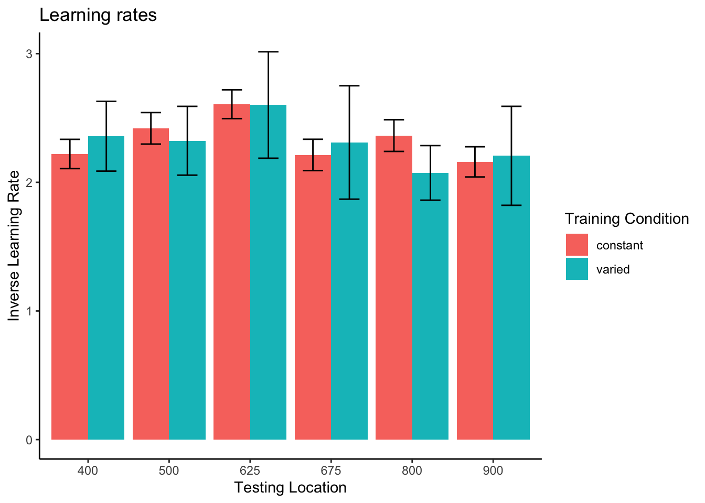
# mr1=e2TestFits %>% filter(converged==TRUE)%>% anova_test(dv=pRate,between=conditType,wid=sbjCode,within=positionX,type=3);show(mr1)
# mr2=exp2.fit2 %>% anova_test(dv=MeanRate,between=conditType,wid=sbjCode,type=3);show(mr2)
h4<-e2TestFits %>%filter(Pval<.4)%>% ggplot(aes(x=positionX,y=pRate,fill=conditType))+geom_bar(stat="summary",position=dodge,fun="mean")+ stat_summary(fun.data=mean_se,geom="errorbar",position=dodge,width=.5)+ggtitle("Learning rates ")+guides(fill=guide_legend(title="Training Condition"))+theme(legend.title.align=.25)+ylab("Inverse Learning Rate")+xlab("Testing Location")
h4First vs. second half of testing stage
testSplit <- transfer %>%
group_by(sbjCode, conditType, positionX, testHalfSbj) %>%
summarise(
MeanTargetDistance = mean(AbsDistFromCenter),
MeanScaledDev =mean(scaledDev,trim=.05),
.groups = "keep"
) %>%
as.data.frame()
testSplit2 <- transfer %>%
group_by(sbjCode, conditType, testHalfSbj) %>%
summarise(
MeanTargetDistance = mean(AbsDistFromCenter, trim = .01),
MeanScaledDev =
mean(scaledDev, trim = .05),
.groups = "keep"
) %>% as.data.frame()
tsw <- testSplit %>% ungroup() %>%
pivot_wider(names_from = testHalfSbj,values_from=c(MeanTargetDistance,MeanScaledDev)) %>%
mutate(endMinusStart = `MeanTargetDistance_2nd-Half` - `MeanTargetDistance_1st-Half`,
endMinusStartScaled = `MeanScaledDev_2nd-Half` - `MeanScaledDev_1st-Half`) %>%
as.data.frame()
tsw2 <- tsw %>%
group_by(sbjCode,conditType) %>% summarise(endMinusStart=mean(endMinusStart),endMinusStartScaled=mean(endMinusStartScaled)) %>% as.data.frame()
# testSplit %>% ggplot(aes(x=testHalfSbj,y=MeanTargetDistance))+
# geom_bar(aes(group=conditType,fill=conditType),stat="summary",position=dodge)+
# facet_wrap(~positionX,ncol=2)+
# stat_summary(aes(x=testHalfSbj,group=conditType),fun.data=mean_se,geom="errorbar",position=dodge)
h1=testSplit %>% filter(testHalfSbj=="1st-Half") %>% ggplot(aes(x=positionX,y=MeanTargetDistance))+
geom_bar(aes(group=conditType,fill=conditType),stat="summary",position=dodge,fun="mean")+stat_summary(aes(x=positionX,group=conditType),fun.data=mean_se,geom="errorbar",position=dodge,width=.8)+
scale_y_continuous(name="Mean Absolute Deviation From Target",limits=c(0,400))+
ggtitle("Testing Performance - 1st half")+
ylab("Mean Absolute Deviation From Target")+xlab("Testing Location")+theme(legend.position="none")
h2=testSplit %>% filter(testHalfSbj=="2nd-Half") %>% ggplot(aes(x=positionX,y=MeanTargetDistance))+
geom_bar(aes(group=conditType,fill=conditType),stat="summary",position=dodge,fun="mean")+stat_summary(aes(x=positionX,group=conditType),fun.data=mean_se,geom="errorbar",position=dodge,width=.8) +
scale_y_continuous(name="",limits=c(0,400))+
ggtitle("Testing Performance - 2nd half")+
xlab("Testing Location")+theme(plot.title = element_text(hjust = 0.5))+
guides(fill=guide_legend(title="Training Condition"))+theme(legend.title.align=.25)
#egg::ggarrange(h1,h2,ncol=2)
h3 <- tsw %>% ggplot(aes(x=positionX,y=endMinusStart))+
geom_bar(aes(group=conditType,fill=conditType),stat="summary",position=dodge,fun="mean")+
stat_summary(aes(x=positionX,group=conditType),fun.data=mean_se,geom="errorbar",position=dodge,width=.8)+
ylab("2nd Half Deviation - 1st Half Deviation")+
ggtitle("Improvement Per Testing Location")+
xlab("Testing Location")+theme(plot.title = element_text(hjust = 0.5))+
guides(fill=guide_legend(title="Testing Location"))+theme(legend.position="none")
#ggarrange(h1,h2,h3,h4,ncol=2)
(h1 + h2) / (h3 + h4)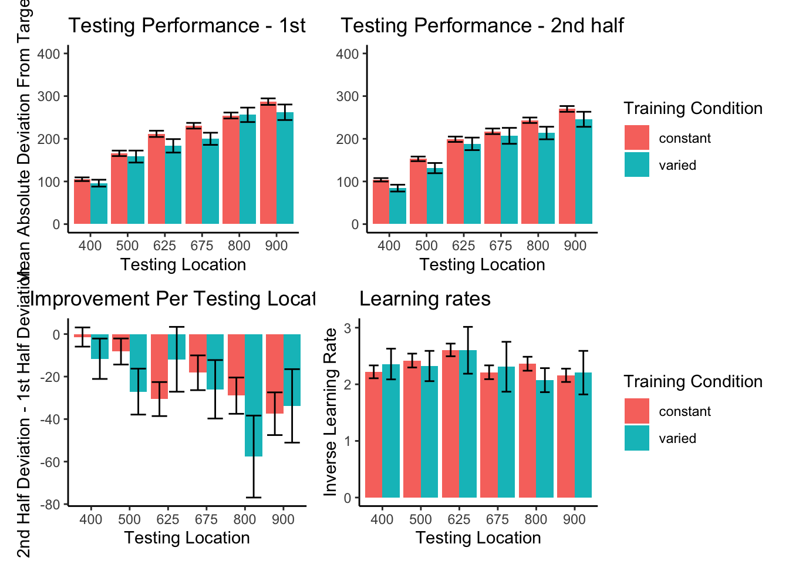
Group Comparison for asymptote-starting performance
# ma1=e2TestFits %>% filter()%>% anova_test(dv=Asymptote.Minus.Start,between=conditType,wid=sbjCode,within=positionX,type=3);show(ma1)
# ma2=exp2.fit2 %>% anova_test(dv=asymMinusStart,between=conditType,wid=sbjCode,type=3);show(ma2)
e2TestFits %>% ggplot(aes(x=conditType,y=Asymptote.Minus.Start,fill=conditType))+
geom_bar(stat="summary",position=dodge,fun="mean")+
stat_summary(fun.data=mean_se,geom="errorbar",position=dodge,width=.5)+
facet_grid(~positionX)+ggtitle("e2 testing (asymptote - start performance)") +
theme(axis.text.x = element_text(angle = 45, hjust = 0.5, vjust = 0.5)) 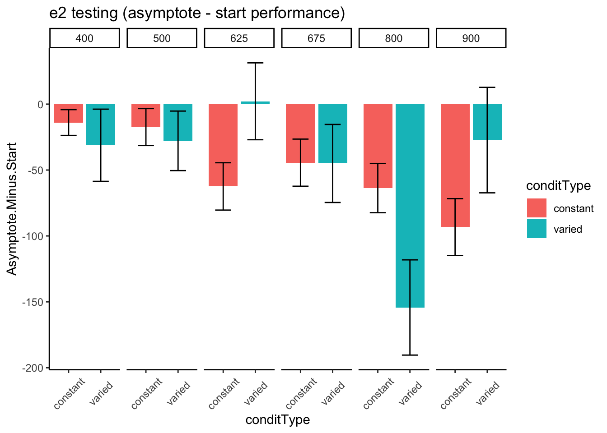
Relative distance and under/overshooting
Reviewer 3 Absolute versus relative distance: From a methodological standpoint, I understand the need to differentiate these two types of distance. However, from a theoretical perspective there may be some issue in differentiating these two concepts. Schema theory relies on relative (or invariant) information to inform the motor program. However, both distances would be important to an instance or exemplar representation. You may want to consider commenting on this issue.
Reviewer 2 For the same reason, the plots showing improvement during training could be due to participants learning the task, rather than fine motor skills. Although task learning and motor learning are impossible to separate cleanly, the common practice in the field is indeed to offer practice trials to reduce the task learning aspects. The authors should address this.
In addition to absolute errors (which is related to variance), the authors should also provide other measures of performance, e.g., the mean of the signed errors, so that readers have a better idea whether there was any meaningful over- or undershooting.
experiment 1 training - relative distances

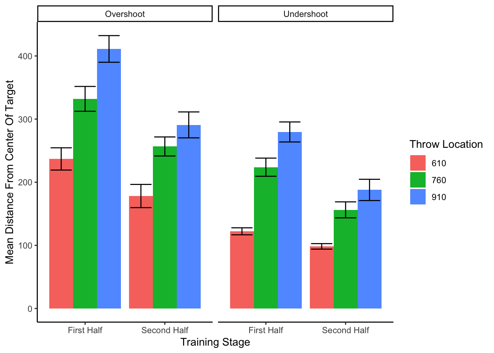

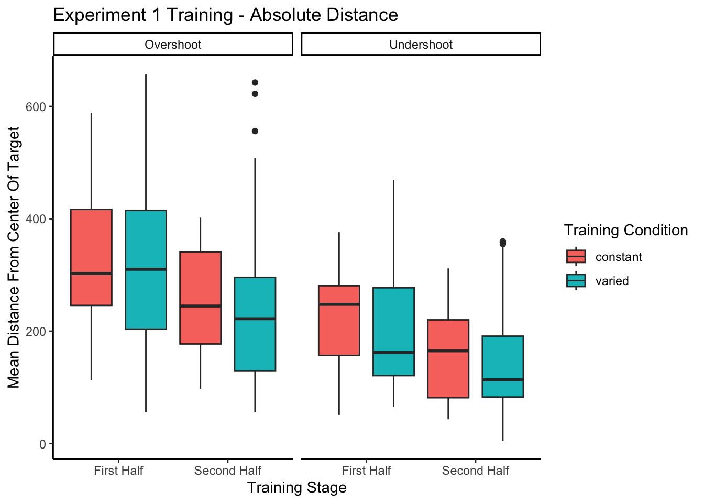
=========================================================================
conditType devianceDirection 610 760 910
-------------------------------------------------------------------------
constant Overshoot 311.84(307.92)
constant Undershoot 188.05(163.62)
varied Overshoot 211.69(234.97) 360.14(322.01)
varied Undershoot 107.35(81.21) 244.85(196.47)
-------------------------------------------------------------------------
======================================================
conditType 610 760 910
------------------------------------------------------
constant 121.03(269.17)
varied 39.91(178.12) 150.53(290.04)
------------------------------------------------------
====================================================================
conditType 610 760 835 910
--------------------------------------------------------------------
constant 7.13(124.02) 107.02(218.49) 142.42(252.34) 122.92(282.58)
varied 3.19(96.67) 92.1(173.9) 103.84(214.4) 108.12(234.59)
--------------------------------------------------------------------experiment 2 training - relative distances

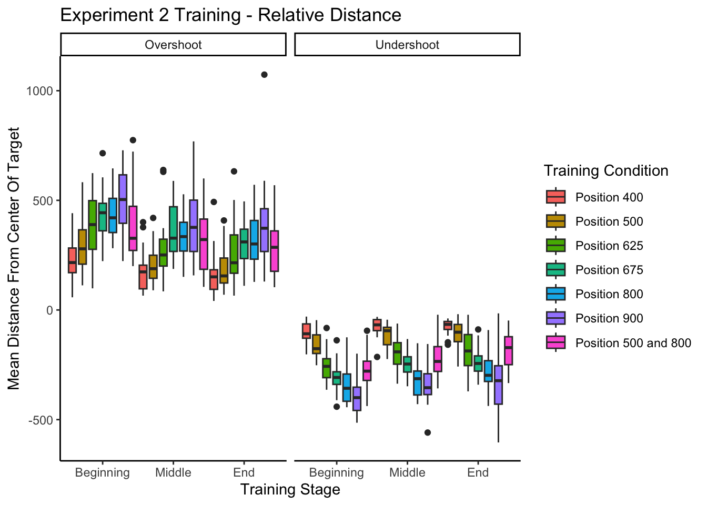
Experiment 1 Testing - relative distances
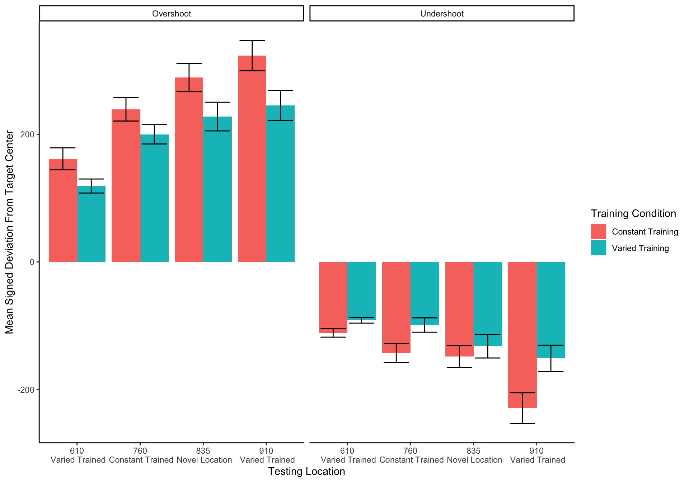
====================================================================================================================================
conditType2 msdu_610 msdu_760 msdu_835 msdu_910 msds_610 msds_760 msds_835 msds_910
------------------------------------------------------------------------------------------------------------------------------------
Constant Training 136.27(84.29) 191.65(112.65) 219.46(139.91) 276.75(153.09) 25.28(158.98) 50.82(217.48) 73.14(250.93) 50.76(313.77)
Varied Training 105.12(51.39) 149.37(93.4) 180.54(129.52) 198.64(137.84) 13.85(116.87) 50.59(169.59) 50.52(217.39) 49.94(237.71)
------------------------------------------------------------------------------------------------------------------------------------
=========================================================================
Condition 610 760 835 910
-------------------------------------------------------------------------
Constant Training 25.28(158.98) 50.82(217.48) 73.14(250.93) 50.76(313.77)
Varied Training 13.85(116.87) 50.59(169.59) 50.52(217.39) 49.94(237.71)
-------------------------------------------------------------------------Experiment 2 Testing - relative distances

Experimenet 1 - intermittent testing
intTest.half <- readRDS(here::here("data/e1_intTest.rds"))
intTest.half %>% ggplot(aes(x=positionX,y=MeanTargetDistance))+
geom_bar(aes(group=trainHalf,fill=trainHalf),stat="summary",fun=mean,position=dodge)+
facet_wrap(~conditType,ncol=2)+
stat_summary(aes(x=positionX,group=trainHalf),fun.data=mean_se,geom="errorbar",position=dodge,width=.8)+
ylab("Mean Distance From Center Of Target")+
xlab("Intermittent Testing Throw Location")+theme(plot.title = element_text(hjust = 0.5))+
guides(fill=guide_legend(title="Training Stage"))+theme(legend.title.align=.25)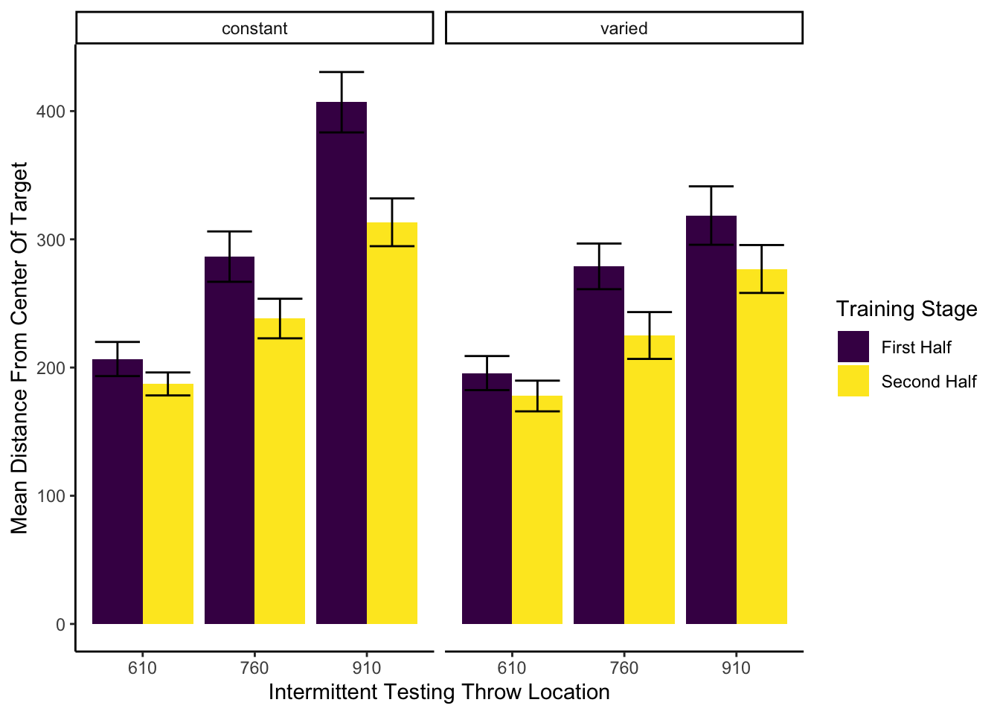
cnames=c("Condition","610_First Half","760_First Half","910_First Half","610_Second Half","760_Second Half","910_Second Half")
test= intTest.half %>% rename(Condition="conditType") %>% group_by(Condition,trainHalf,positionX) %>%
summarise(Mean=round(mean(MeanTargetDistance),2),sd=round(sd(MeanTargetDistance),2))
test=test %>% group_by(Condition) %>% mutate(msd=paste(Mean,"(",sd,")",sep="")) %>%
select(Condition,positionX,trainHalf,msd)%>% pivot_wider(names_from = c(positionX,trainHalf),values_from=c(msd))
test=test %>% as.data.frame()
colnames(test) <- cnames
stargazer(test,type="text",summary=FALSE,rownames=FALSE)
======================================================================================================
Condition 610_First Half 760_First Half 910_First Half 610_Second Half 760_Second Half 910_Second Half
------------------------------------------------------------------------------------------------------
constant 206.64(82.08) 286.51(121.07) 406.93(145.2) 187.2(55.24) 238.21(95.16) 313.27(114.86)
varied 195.68(78.58) 278.9(105.37) 318.53(134.81) 177.79(70.82) 224.98(108.04) 276.86(110.5)
------------------------------------------------------------------------------------------------------Training plots - Experiment 1
# possible that scaling required loading special package from devtools
exp1Train <- e1 %>% filter(stage!="Transfer",mode==1) %>% group_by(Group,sbjCode) %>%mutate(scaleDev=scale_this(AbsDistFromCenter)) %>%ungroup() %>% group_by(Group,sbjCode,stage,conditType)
exp1Train = exp1Train %>% summarise(MeanTargetDistance=mean(AbsDistFromCenter),scaledDist=mean(scaleDev,trim=.05))
exp1Train$stage <- factor(exp1Train$stage, levels = c("Beginning", "Middle", "End")) #in case the levels get out of order
exp1TrainTrials <- e1 %>% filter(stage!="Transfer",mode==1,trialType!=44) %>% group_by(Group,sbjCode,positionX) %>% mutate(scaleDev=scale_this(AbsDistFromCenter),ind=1,trainIndex=cumsum(ind)) %>%ungroup() %>% group_by(Group,sbjCode,stage,conditType)
# manuscript plot - original
ggplot(data = exp1Train, aes(x=stage, y=MeanTargetDistance)) + geom_boxplot(aes(fill=conditType),position=position_dodge(1))+stat_summary(fun="mean",aes(group=conditType),position=position_dodge(1))+
ylab("Mean Distance From Center Of Target") +xlab("Training Stage")+theme(plot.title = element_text(hjust = 0.5))+guides(fill=guide_legend(title="Training Condition"))+theme(legend.title.align=.5)+theme_classic()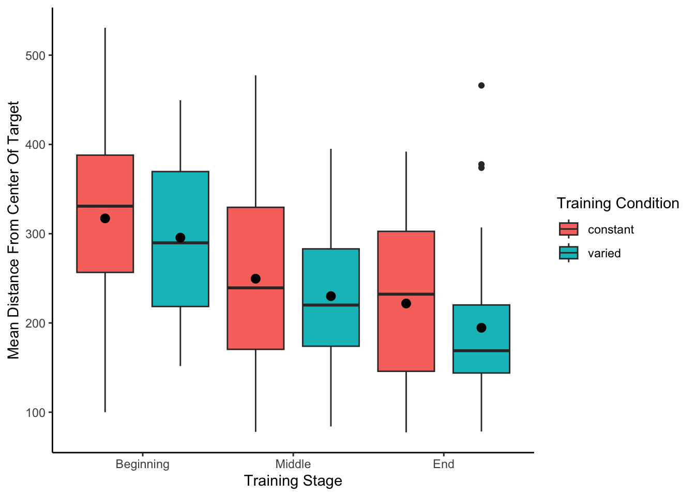
lineplot.CI(data=exp1Train,x.factor=stage,group=conditType,response=scaledDist,xlab="Training Stage",x.leg=2,legend=TRUE,ylab="Distance from Target (scaled)",main="Training Performance - Experiment 1",col=c("red","black"))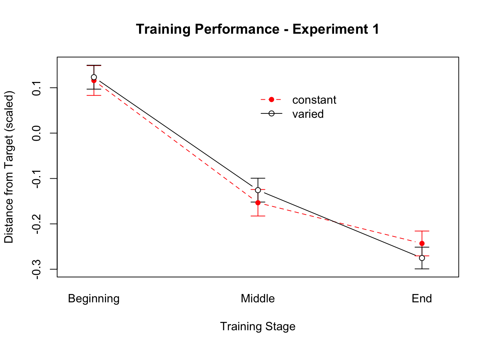
lineplot.CI(data=exp1Train,x.factor=stage,group=conditType,response=MeanTargetDistance,xlab="Training Stage",x.leg=2,legend=TRUE,ylab="Distance From Target",main="Training Performance - Experiment 1",col=c("red","blue"))
Not in manuscript
fit to testing performance averaged across positions
e2Fits.AggPos <- readRDS(here::here('data/IGAS-e2Fits.AggPos-April_12.rds'))
e2Fits.AggPos %>% ggplot(aes(x=Group,y=pStart,fill=Group))+
geom_bar(stat="summary",position=dodge,fun="mean")+
stat_summary(fun.data=mean_se,geom="errorbar",position=dodge,width=.5)+
ggtitle("experiment 2 - starting performance per position") +
theme(axis.text.x = element_text(angle = 45, hjust = 0.5, vjust = 0.5)) 
e2Fits.AggPos %>% ggplot(aes(x=Group,y=pAsym,fill=Group))+
geom_bar(stat="summary",position=dodge,fun="mean")+
stat_summary(fun.data=mean_se,geom="errorbar",position=dodge,width=.5)+
ggtitle("e2 testing performance asymptote per position ") +
theme(axis.text.x = element_text(angle = 45, hjust = 0.5, vjust = 0.5)) 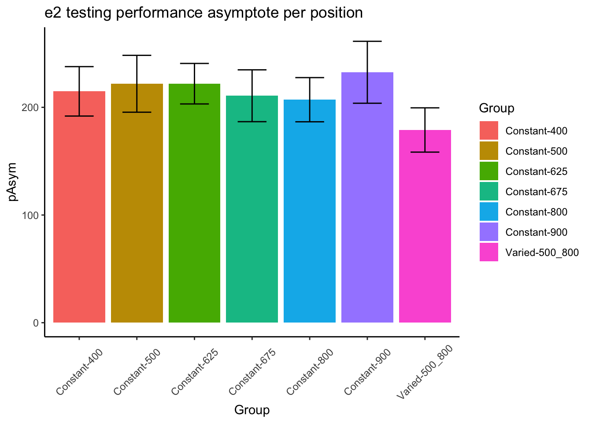
e2Fits.AggPos %>% ggplot(aes(x=Group,y=pRate,fill=Group))+
geom_bar(stat="summary",position=dodge,fun="mean")+
stat_summary(fun.data=mean_se,geom="errorbar",position=dodge,width=.5)+
ggtitle("e2 testing performance asymptote per position ") +
theme(axis.text.x = element_text(angle = 45, hjust = 0.5, vjust = 0.5)) 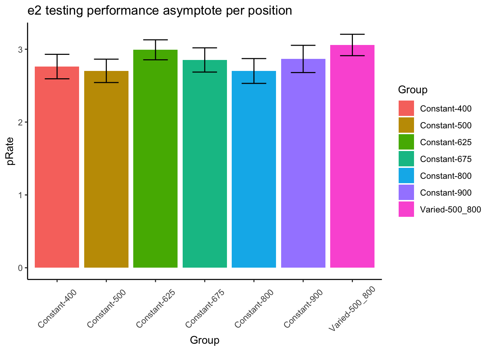
#mr1=e2Fits.AggPos %>% anova_test(dv=pRate,between=conditType,wid=sbjCode,type=3);show(mr1)statistical tests for starting performance
ms1=e2TestFits %>% filter(converged==TRUE) %>% anova_test(dv=pStart,between=conditType,wid=sbjCode,within=positionX,type=3);
ms2=exp2.fit2 %>% anova_test(dv=MeanStart,between=conditType,wid=sbjCode,type=3);
#ms1
ms2 ANOVA Table (type III tests)
Effect DFn DFd F p p<.05 ges
1 conditType 1 206 3.04 0.083 0.015e2TestFits %>% ggplot(aes(x=conditType,y=pStart,fill=conditType))+
geom_bar(stat="summary",position=dodge,fun="mean")+
stat_summary(fun.data=mean_se,geom="errorbar",position=dodge,width=.5)+
facet_grid(~positionX)+ggtitle("experiment 2 - starting performance per position") +
theme(axis.text.x = element_text(angle = 45, hjust = 0.5, vjust = 0.5)) 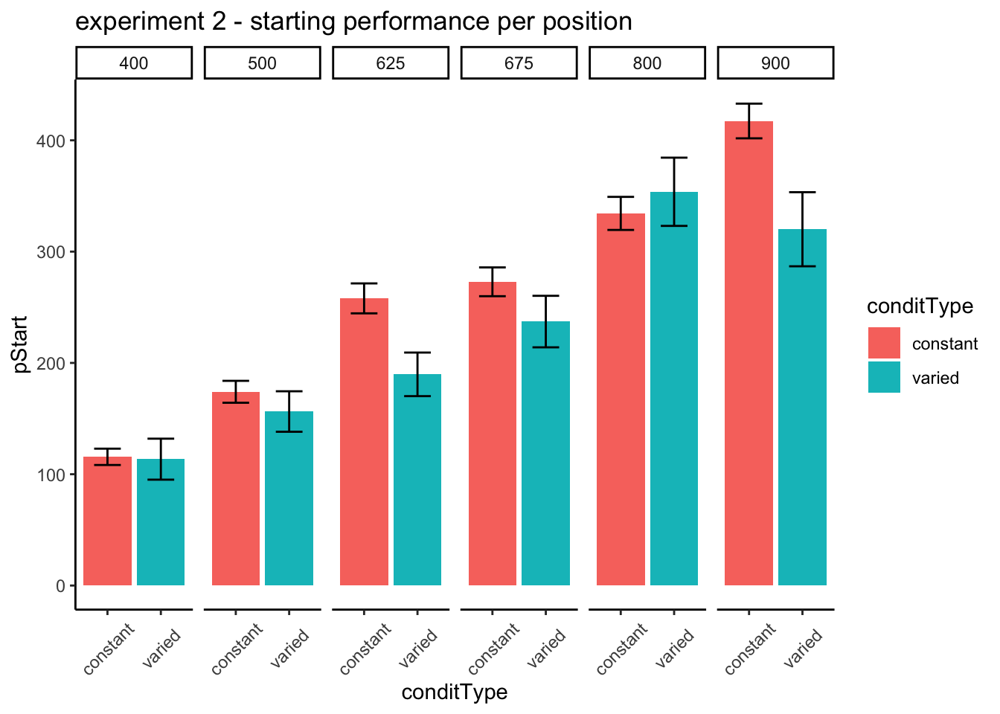
statistical tests for asymptote
ma1=e2TestFits %>% filter(converged==TRUE)%>% anova_test(dv=pAsym,between=conditType,wid=sbjCode,within=positionX,type=3);
ma2=exp2.fit2 %>% anova_test(dv=MeanAsym,between=conditType,wid=sbjCode,type=3);
ma2ANOVA Table (type III tests)
Effect DFn DFd F p p<.05 ges
1 conditType 1 206 3.38 0.067 0.016e2TestFits %>% ggplot(aes(x=conditType,y=pAsym,fill=conditType))+
geom_bar(stat="summary",position=dodge,fun="mean")+
stat_summary(fun.data=mean_se,geom="errorbar",position=dodge,width=.5)+
facet_grid(~positionX)+ggtitle("e2 testing performance asymptote per position ") +
theme(axis.text.x = element_text(angle = 45, hjust = 0.5, vjust = 0.5)) 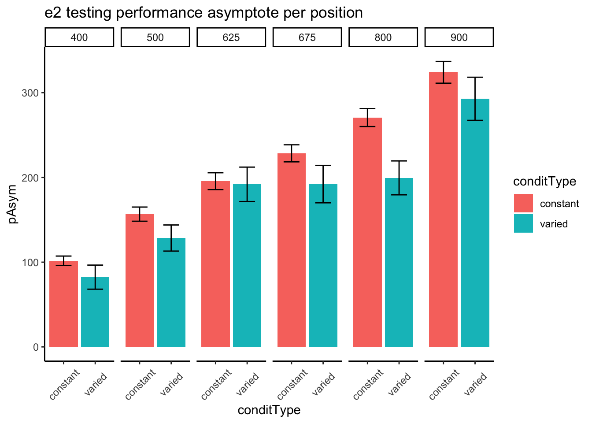